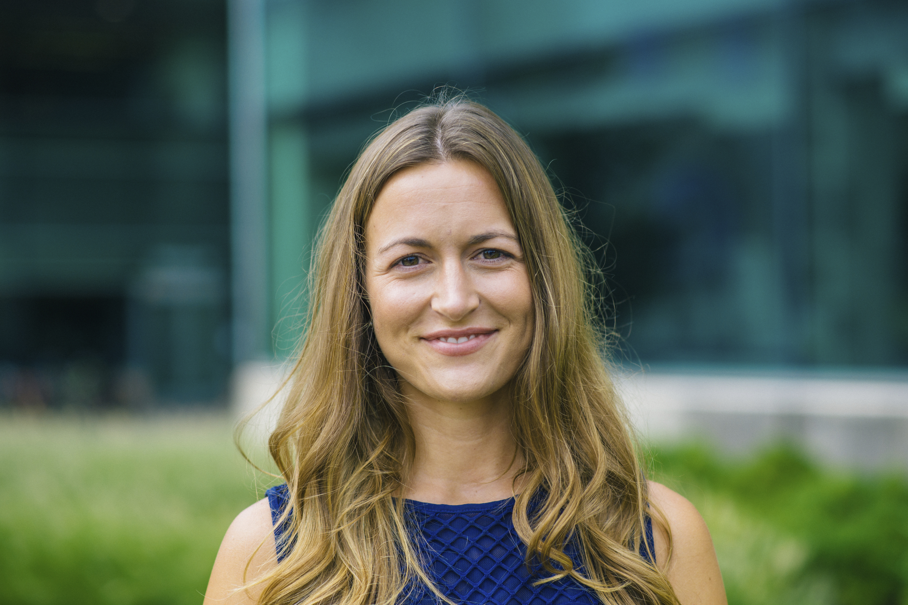

About Me
Background
I believe writing helps us understand ourselves and our world, our values and our purpose, and in so doing enables us to become agentive selves capable of pursuing a well-lived life.
For five years, I had the gift of sharing this power of writing and reading with middle and high school English students. And I loved it! But there was something missing.
Owed in large part to my training at Columbia's Teachers' College, I always saw myself as a both a teacher and a researcher of my craft. Yet, the reality of teaching left little time for the kind of research that would sate my curiosity.
So I returned to graduate school, choosing Northwestern, the epicenter of studies in the Learning Sciences, to study research on design and learning. I was interested in how we could leverage technology to engage students in richer learning experiences and to free up teachers so that relationships, rather than paperwork, could be the focus of their attention.
As with any good learning experience, my thinking expanded and my learning trajectory altered multiple times while at Northwestern. After taking a course in Python, I realized that I had a developed a love for programming! I enjoyed working on a problem patiently, paying attention to all its fine details, and experiencing that hard-won feeling of contentent when all your efforts pay off in a useful and innovative final product. I ended up signing up for a course in Web the following quarter.
After completing my master's program, I knew I wanted to continue creating and building up my programming skills. I enrolled in Epicodus's full-time coding school in August to fill in the gaps I need in order to be a junior developer.
By next year, I hope to find work with an EdTech company, who shares my mission to create social, relevant, and playful learning experiences. I think being a programmer with a learning sciences background will help me contribute in unique and meaningful ways.
Education
Job Experience
Teacher
Norfolk Academy
August 2014 - June 2019